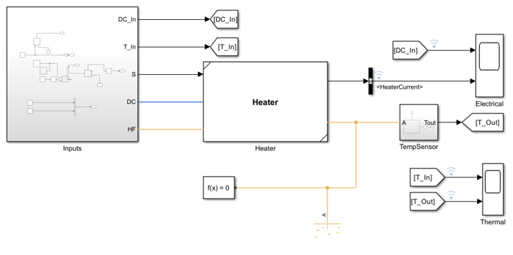
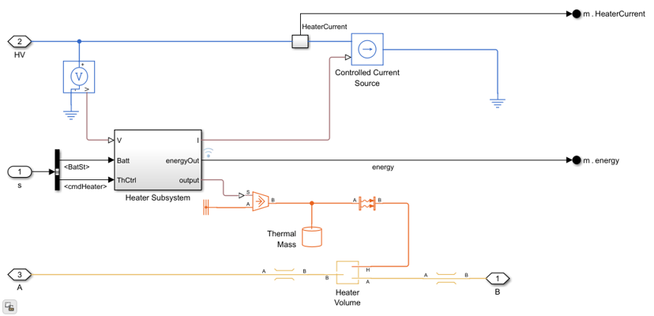

Estimate Range in Cold Ambient Conditions
Vehicle workflow — Accounts for battery-conditioning energy in range calculations.
Heat battery coolant during low-temperature operation
Component path: Components / BatteryHeater

Battery heater component for the BEV thermal management system. The heater draws power from the HV bus to warm the battery pack in cold ambient conditions, ensuring the cells operate within their optimal temperature window. Two fidelity levels are available.
Use Heater when cold-start energy, heater thermal mass, and coolant heat transfer affect the result. Use HeaterDummy only to preserve the electrical and coolant interfaces while validating system integration quickly.
| Model | Description | Use case | Templates | Documentation & files |
|---|---|---|---|---|
| Heater | Controlled current source with thermal mass and coolant coupling. | Cold-climate range estimation, thermal management strategy evaluation, and auxiliary power consumption studies. | VehicleElectroThermal | Documentation · Parameters |
| HeaterDummy | Fixed load with coolant pass-through and no heat exchange. | Integration testing or fast simulations where heater behavior is not under study but the model needs a connected heater block. | VehicleElectroThermal | Documentation · Parameters |
Workflow/Vehicle/RangeEstimation/) — The heater activates during cold-ambient drive cycles to keep the battery pack at an operable temperature. Its energy consumption directly impacts the vehicle range in low-temperature scenarios.
Vehicle workflow — Accounts for battery-conditioning energy in range calculations.
Both fidelities share the same HV-bus and control-command boundary. Heater includes active thermal coupling; HeaterDummy passes coolant through without heat exchange.
| Port / signal | Direction | Description |
|---|---|---|
| Battery status | Input | Pack voltage, current, temperature, and SOC from the BMS. |
| Heater control command | Input | On/off or proportional command from the thermal controller. |
| HV bus connection | Input | Electrical connection to draw heater current. |
| Coolant port (both fidelities) | Conserving | Thermal-liquid interface for coolant loop heat exchange (active in Heater, pass-through in HeaterDummy). |
| Heater Current | Output | Current drawn from the HV bus. |
| HV Power (Heater) | Output | Electrical power consumed by the heater. |
| Thermal States (Heater) | Output | Heater temperature and heat flow to coolant. |
Verify heater thermal mass, electrical draw, and coolant heat transfer under controlled inputs.
Run the maintained BatteryHeater test case before integration.
High-Voltage Battery | HVAC | Chiller